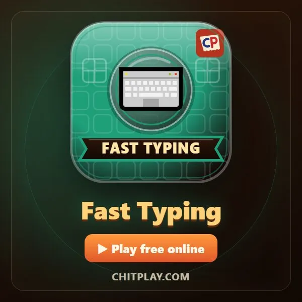
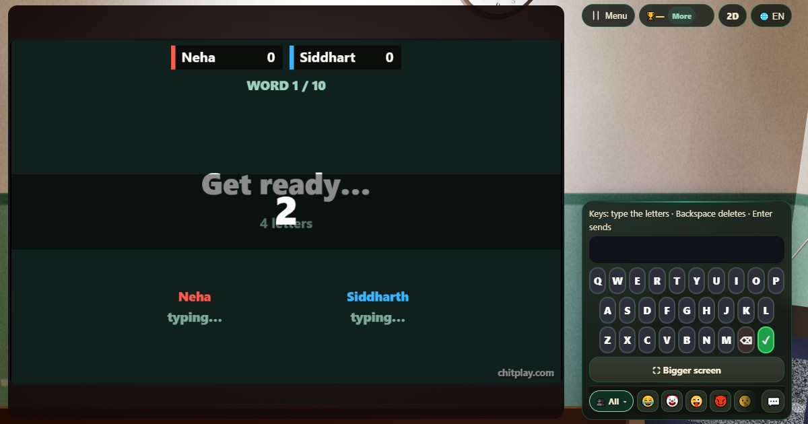
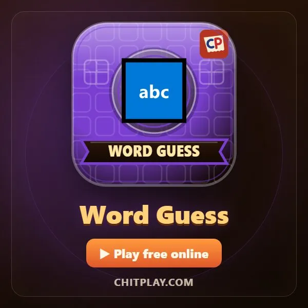
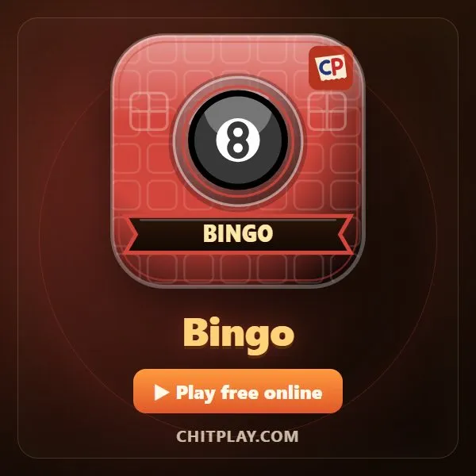
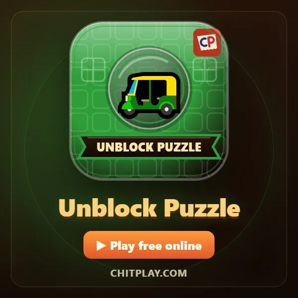
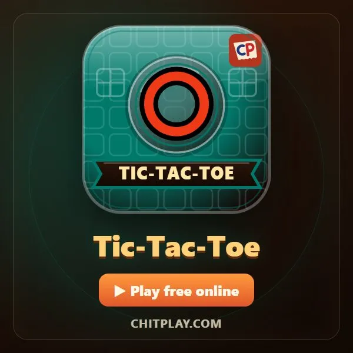
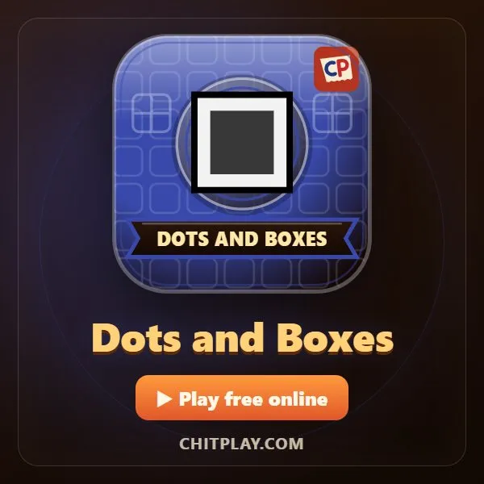

فاسٹ ٹائپنگ (Fast Typing)
- 👥 1–4 کھلاڑی
- کاغذ اور قلم کے گیمز
- 🆓
اردو گائیڈ
ایک لفظ آتا ہے: اسے بالکل ویسا ہی، جتنا تیز ہو سکے ٹائپ کریں۔ دس لفظ، ہر ایک پچھلے سے لمبا۔
English name: Fast Typing

کیسے کھیلیں
- ایک سیکنڈ کے لیے "Get ready" دکھتا ہے، پھر لفظ آتا ہے۔
- حروف والے کی پیڈ (یا کی بورڈ) پر لفظ ٹائپ کریں اور ✓ دبائیں۔ ہر لفظ پر ایک ہی کوشش ملتی ہے۔
- لفظ کے نیچے کی پٹی باقی وقت دکھاتی ہے: چار سیکنڈ اور ہر حرف کا ایک سیکنڈ۔
- ہر فون اپنے کھلاڑی کا وقت اسی لمحے سے ناپتا ہے جب لفظ اس پر دکھا، اس لیے سست انٹرنیٹ آپ کی رفتار کم نہیں کرتا۔
پوائنٹس کیسے ملتے ہیں
صحیح لفظ پر فی سیکنڈ ٹائپ کیے گئے ہر حرف کے دس پوائنٹس: چھ حروف دو سیکنڈ میں یعنی 30۔ ہر صحیح لفظ پر کم از کم 5، زیادہ سے زیادہ 60۔ ایک بھی غلط حرف تو اس لفظ کے کوئی پوائنٹس نہیں۔ 120، 200، 280 اور 360 پوائنٹس پر میڈل۔
کون جیتتا ہے
دس لفظوں کے بعد سب سے زیادہ پوائنٹس والا جیتتا ہے۔
اکثر پوچھے جانے والے سوالات
کیا یہ ٹائپنگ اسپیڈ ٹیسٹ ہے؟
جی ہاں۔ آخر میں صحیح لفظوں پر آپ کی اوسط رفتار (حروف فی سیکنڈ) دکھتی ہے، تاکہ آپ دیکھ سکیں کہ کتنا بہتر ہو رہے ہیں۔
لفظ کس زبان میں ہوتے ہیں؟
روزمرہ کے انگریزی الفاظ، جیسے جانور، پھل اور گھر کی چیزیں، چار سے دس حروف تک لمبے۔
کیسے کھیلیں
- مہمان کے طور پر: نہ رجسٹریشن نہ لاگ اِن۔ نام چنیں اور فوراً کھیلیں۔
- کمپیوٹر کے ساتھ: کوئی نہ ہو تو خالی جگہیں کمپیوٹر کھلاڑی بھر دیتے ہیں۔ آسان، نارمل یا مشکل۔
- آن لائن: دنیا بھر کے کھلاڑیوں والی کھلی میز پر بیٹھیں۔
- قریب کے دوستوں کے ساتھ: ایک فون پر گیم شروع کریں اور کوڈ یا QR کوڈ بھیجیں۔ دوست اپنے فون سے شامل ہو جاتے ہیں۔
- ایک فون پر: باری باری فون آگے بڑھائیں: پورے گھر کے لیے ایک فون کافی ہے۔
دوسری زبانیں
- हिन्दी: फ़ास्ट टाइपिंग
- Hinglish: Fast Typing
- Español: Escritura rápida
- Português: Digitação rápida
- Français: Frappe rapide
- Deutsch: Schnell tippen
- Bahasa Indonesia: Mengetik Cepat
- Türkçe: Hızlı Yazma
- Italiano: Digitazione veloce
- 日本語: タイピング早打ち
- 한국어: 빠른 타자
- 中文: 快速打字
- Русский: Быстрый набор
- नेपाली: फास्ट टाइपिङ
- বাংলা: ফাস্ট টাইপিং
- English: Fast Typing · مکمل اصول (انگریزی)
کھیلوں کے آئیڈیاز
تمام گیمز
 اسٹروپ ٹیسٹ
اسٹروپ ٹیسٹ نمبر میموری
نمبر میموری
ورڈ گیس
بنگو
ان بلاک پزل
زیرو کاٹا
ڈبے بناؤ- میموری میچ
ChitPlay میں اصلی پیسے، شرط یا انعام نہیں ہیں۔ پوائنٹس کی کوئی قیمت نہیں۔